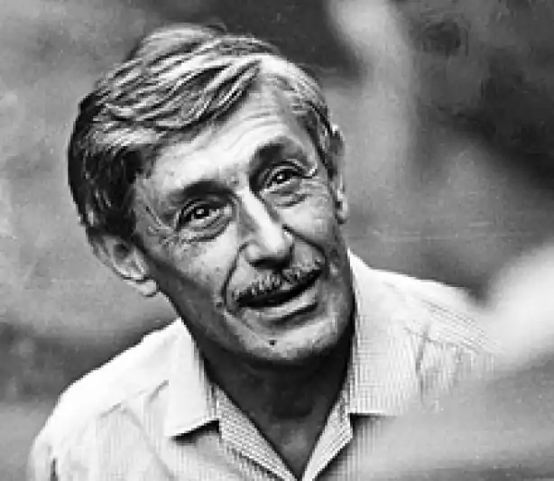
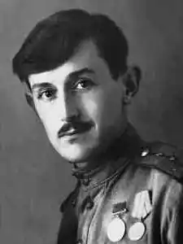

Віктор Платонович Некрасов.
Народився 4 (17) Червень 1911 року в Києві — помер 3 вересня 1987 року в Парижі. Російський радянський письменник, дисидент і емігрант, лауреат Сталінської премії другого ступеня (1947). Народився Віктор Некрасов 4 (17) Червень 1911 рік у Києві, в родині лікаря.
Батько — Платон Федосійович Некрасов, мати — Зінаїда Миколаївна Некрасова. Старший брат Коля Некрасов юнаків був запороти до смерті (петлюрівцями або червоними). У 1936 році Віктор Некрасов закінчив архітектурний факультет Київського будівельного інституту (навчався у Йосипа Каракіса, з яким довгі роки підтримував близькі стосунки), паралельно проходив навчання в театральній студії при театрі. Після закінчення інституту працював актором і театральним художником (у Владивостоці, 1937-1938; в Кірові, 1938-1940; в Ростові-на-Дону, вересень 1940-1941). У Ростові Некрасов служив в Театрі Червоної армії СКВО, який виступав за військовим гарнізонах і армійським таборах. Як згадувала актриса Варвара Шурховецкая, що служила в тому ж театрі, що і Віктор, після початку Великої Вітчизняної війни актори — незважаючи на полагавшуюся їм бронь — стали проситися на фронт; проте з усієї трупи вдалося потрапити на фронт тільки Некрасову (по військовій спеціальності він був сапером, а їх не вистачало). У 1941-1944 роки Некрасов був на фронті полковим інженером і заступником командира саперного батальйону, брав участь у Сталінградській битві, після поранення в Польщі, на початку 1945 року, в званні капітана був демобілізований. Член ВКП (б) з 1944 року (виключений з партії в 1973). Повість "В окопах Сталінграда", опублікована в 1946 році в журналі "Знамя" (1946, № 8-10), була однією з перших книг про війну, написаних правдиво, наскільки це було можливо в той час. Вона принесла письменникові справжню славу: перевидана загальним тиражем в кілька мільйонів примірників, переведена на 36 мов. За цю книгу, після її прочитання Йосипом Сталіним, Віктор Некрасов отримав в 1947 році Сталінську премію 2-го ступеня. За мотивами повісті і за сценарієм Некрасова в 1956 році був знятий фільм "Солдати", відзначений премією Всесоюзного кінофестивалю (в цьому фільмі зіграв одну зі своїх перших великих кіноролей Інокентій Смоктуновський). За сценаріями Віктора Некрасова поставлені кінофільми "Місто запалює вогні" (1958) і "Невідомому солдату" (1961). У 1959 році Некрасов пише повість "Кіра Георгіївна" і виступає в "Литературной газете" з рядом статей про необхідність увічнити пам'ять радянських людей, розстріляних фашистами в 1941 році в Бабиному Яру. Некрасова стали звинувачувати в організації "масових сіоністських збіговиськ". І все-таки пам'ятник у Бабиному Яру було встановлено, і в цьому чимала заслуга письменника. Після того, як в "Новом мире" (1967, № 8) був опублікований нарис В. П. Некрасова "Дім Турбіних", люди потягнулися до цього будинку. Будинок називають не за прізвищем тут жив автора роману "Біла гвардія", Михайла Булгакова, а на прізвище "жили" тут його героїв. Будинок став сучасної легендою Андріївського узвозу. У 1966 році підписав лист 25-ти діячів культури і науки генеральному секретарю ЦК КПРС Л. І. Брежнєву проти реабілітації Сталіна. У 1960-і роки відвідав Італію, США і Францію. Свої враження письменник описав у нарисах, за які в розгромної статті Мелорі Стуруа "Турист з паличкою" був звинувачений в "низькопоклонстві перед Заходом". Через ліберальних висловлювань в 1969 році виборов партійне стягнення, а 21 травня 1973 на засіданні Київського міськкому КПУ виключений з КПРС. При домашньому обшуку у Некрасова 17 січня 1974 року в Києві КДБ були вилучені всі рукописи і нелегальна література, протягом наступних шести днів письменник піддавався багатогодинним допитам. Остання в СРСР книга Некрасова — "У житті і в листах" вийшла в 1971 році. Після цього на видання його нових книг було накладено негласну заборону, а потім з бібліотек стали вилучатися і все раніше вийшли книги. Протягом березня-травня 1974 року в відношенні Некрасова було проведено кілька провокацій: він затримувався міліцією на вулицях то Києва, то Москви нібито для встановлення його особи, після чого його відпускали то з вибаченнями, то без них. 20 травня 1974 року Некрасов написав персонального листа Брежнєву, в якому, згадавши про всі ці провокації, констатував: "Я став неугодний. Кому — не знаю. Але терпіти більше образ не можу. Я змушений зважитися на крок, на який я ніколи б за інших умов не наважився б. Я хочу отримати дозвіл на виїзд з країни терміном на два роки ". Не дочекавшись відповіді, 10 липня 1974 року Віктор Некрасов і його дружина Галина Базій подали документи на виїзд з СРСР (для поїздки до родича в Швейцарію на три місяці). 28 липня Некрасову повідомили, що прохання його буде задоволена, слідом за чим він отримав дозвіл на виїзд за кордон в Лозанну (Швейцарія). Виклик до Швейцарії Віктору Некрасову оформив Микола Ульянов (рідний дядько). 12 вересня 1974 року народження, маючи на руках радянські закордонні паспорти терміном на п'ять років, Некрасов з дружиною вилетіли з Києва до Цюріха. У Швейцарії Віктор Некрасов зустрічався з Володимиром Набоковим. Далі жив в Парижі, спочатку у Марії Розанової і Андрія Синявського, потім на знімних квартирах. Влітку 1975 року був запрошений письменником Володимиром Максимовим на посаду заступника головного редактора журналу "Континент" (1975-1982), співпрацював разом з Анатолієм Гладиліним в паризькому бюро радіостанції "Свобода". Після від'їзду Віктора Некрасова і Галини Базій за кордон пасинок Некрасова (син Базій від першого шлюбу) Віктор Кондирєв з дружиною і сином залишився в Ростові: йому права на виїзд не давали. Некрасов звернувся за допомогою до Луї Арагону, якого радянське керівництво збиралося нагородити орденом Дружби народів. Той прийшов до радянського посольства і заявив, що публічно відмовиться від ордена, якщо Кондирева не випустять з СРСР. Ця загроза подіяла, і Кондирева з його сім'єю в 1976 році дали дозвіл виїхати в Париж — до матері і вітчима. У травні 1979 року Віктор Некрасов був позбавлений радянського громадянства "за діяльність, несумісну з високим званням громадянина СРСР". В останні роки жив разом з дружиною на площі Кеннеді в Ванве (передмістя Парижа), в одному будинку з Віктором Кондирева. Розпочата в СРСР горбачовська перебудова його дуже жваво цікавила. Останнім твором письменника стала "Маленька сумна повість". Віктор Некрасов помер від раку легенів в Парижі 3 вересня 1987 року. Похований на кладовищі Сент-Женев'єв-де-Буа.